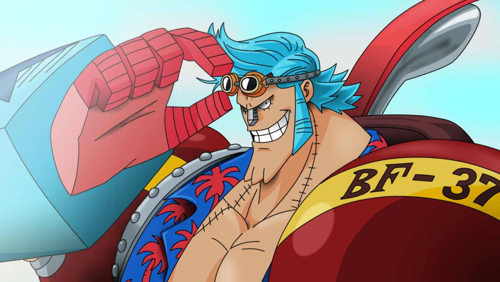
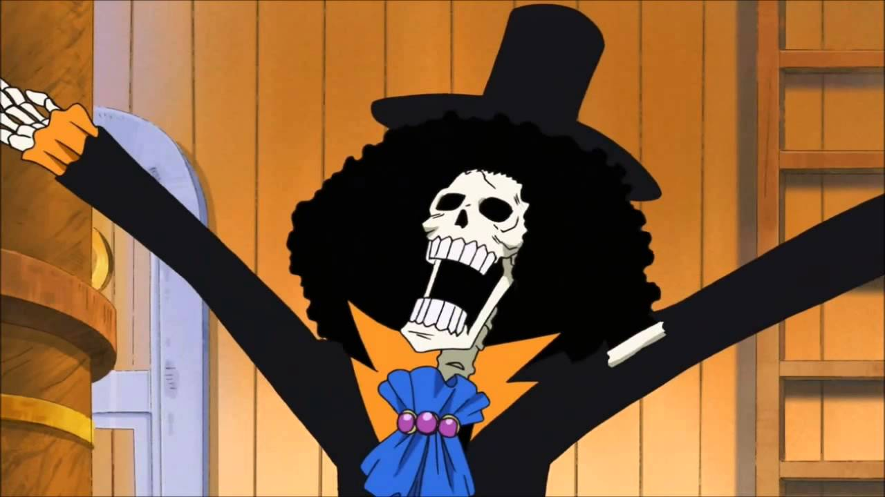

Luffy

Luffy era um garoto normal até conhecer Shanks. Em um belo dia, o pequeno acabou por presenciar o pirata Ruivo apanhar por bandidos dentro de um bar. Logo depois dos malfeitores irem embora, Shanks e sua tripulação começaram a rir, isso deixou Luffy irritado e comeu uma fruta que estava dentro de um pequeno baú.
Shanks rapidamente tenta retirar a fruta de Luffy, mas não consegue, assim o pequeno garoto ganharia poder de se esticar que nem uma borracha, pois ele havia digerido uma Akuma no Mi, que tinha o nome de Gomu Gomu no Mi.
Atualmente Luffy tem uma tripulação,poderes elasticos e de fogo aumentando ou fortificando braços e pernas e tentando se tornar o Rei dos piratas.
|
Zoro
Ele foi o primeiro membro a juntar-se à tripulação. Sua fama como mestre espadachim e sua grande força, juntamente com as ações de seu capitão, às vezes levaram os outros a acreditar que ele era o verdadeiro capitão da tripulação antes deste obter sua primeira recompensa, enquanto algumas pessoas acreditam que ele seja o imediato.
Ele é um dos quatro melhores lutadores da tripulação, ao lado de Luffy, Sanji e Jinbe, e seu sonho é se tornar o maior espadachim do mundo. Zoro
também é considerado como um dos doze piratas que são referidos como "A Pior Geração".
|
Nami
Nami a "Gata Ladra" é uma pirata e a navegadora dos Piratas do Chapéu de Palha.
Ela foi o terceiro membro da tripulação e o segundo a entrar, fazendo-o durante o Arco Orange Town. Ela era anteriormente membr
o dos Piratas do Arlong e juntou-se inicialmente aos Chapéus de Palha com a intenção de roubá-los,
mas se um dos Chapéus de Palha de verdade depois de se rebelar contra Arlong no final do Arco Arlong Park.
|
Usopp
É o Atirador dos Chapéus de Palha, e o ex-capitão do super pequeno grupo os Piratas Usopp.
Quando Usopp foi introduzido pela primeira vez, ele foi muitas vezes (comicamente) rotulados como "mentiroso"
pelos Chapéus de Palha, devido à seu nome que significa "mentira" ou "falsidade". Ele nasceu na Vila Syrup,
e foi mencionado pela primeira vez por Yasopp, seu pai. Ele é oficialmente o terceiro (não oficialmente quarto) membro da tripulação,
e o terceiro a entrar no bando,e depois de sua saída do bando, voltando no final do Arco Pós-Enies Lobby.
creditado ao seu apelido e alter-ego "Sogeking". Ele também é considerado um do trio "fraco" da tripulação, juntamente com Nami e Chopper.
Depois de despertar Kenbunshoku Haki,
ele se tornou o quarto membro da tripulação do Chapéu de Palha a demonstrar e usar uma forma de Haki .
|
Sanji
Sanji "Perna Negra", nasceu como Vinsmoke Sanji,é o cozinheiro dos Piratas do Chapéu de Palha, assim como o ex-chefe de cozinha do
Baratie. Ele também é o terceiro filho da Família Vinsmoke, tornando-o um Príncipe do Reino Germa,
até que ele renegou-los oficialmente duas vezes. Apesar Sanji renunciar seu sobrenome Vinsmoke, o Governo Mundial rotula-lo
como parte de seu nome em seu cartaz de procurado.
Ele é oficialmente o quarto membo da tripulação, fazendo isso no final do
Arco Baratie. Desde que nasceu no North Blue, ele é o primeiro Chapéu de Palha a não se originar de East Blue.
Ele é um dos três melhores lutadores da equipe, ao lado de Luffy e Zoro .
|
Chopper
Tony Tony Chopper é uma rena. Ele é o médico da tripulação dos Piratas do Chapéu de Palha.
Chopper é uma rena que, após comer a Hito Hito no Mi, adquiriu a habilidade de se transformar e raciocinar como os humanos
.Ele é o sexto membro e o único da tripulação que nasceu na Grand Line, numa ilha chamada Drum.
Por ter sido confundido como mascote,
|
Nico Robin
Nico Robin, também conhecida como "Criança Demônio" e "Luz da Revolução",
é a arqueóloga dos Piratas do Chapéu de Palha. Ela é a única sobrevivente da ilha
destruída de Ohara, localizada no West Blue. Como resultado, ela é atualmente a única
pessoa no mundo com a capacidade de ler e decifrar Poneglyphs, uma habilidade
que é considerada proibida e que ameaça o Governo Mundial.
Ela foi introduzida pela primeira vez como o vice-presidente da Baroque Works e antagonista
secundária da Saga Alabasta, conhecida como Miss All Sunday, antes de se juntar aos Chapéus de Palha.
Ela é a sétima integrante da tripulação, a sexta a se unir e, como Nami, é a segunda a reentrar,
chegando perto do final do Arco Enies Lobby. Robin também é o primeiro membro a ter sido um antagonista.
Ela comeu a Hana Hana no Mi.
|
Franky

Franky é o carpinteiro dos Piratas do Chapéu de Palha. Ele é um cyborg de 36 anos de Water 7
e foi introduzido na história como o líder da Família Franky, um grupo de desmantelamento de navios.
Ele foi originalmente chamado de "Cutty Flam" até trocar seu nome original por seu apelido a pedidos de
Iceburg para esconder sua identidade. Franky e seus seguidores foram inicialmente introduzidos como antagonistas do Arco Water 7
contra os Chapéus de Palha até as circunstâncias forçá-los a se tornarem aliados. A pedido da Família Franky, Franky foi permitido
se juntar aos Chapéu de Palha para realizar seu sonho de criar e dirigir um navio capaz de dar a volta ao mundo, o Thousand Sunny.
Ele é o oitavo membro da tripulação dos Chapéus de Palha e o sétimo a se juntar ao bando de Luffy.
Ele também é o segundo membro a ser um ex-antagonista (o primeiro sendo Nico Robin).
|
Brook

Brook é o Músico dos Piratas do Chapéu de Palha. Ele é um esqueleto que os Chapéus de Palha
encontraram a bordo de um navio fantasma depois de entrarem no Triângulo Florian.
Ele é um usuário de Akuma no Mi que comeu a Yomi Yomi no Mi, o que o torna um pseudo-imortal por causa de seus poderes.
Ele é o nono membro do Bando do Chapéu de Palha, e o oitavo a se juntar à tripulação de Luffy.
Ele é também um dos dois Espadachins a bordo de seu atual navio, o outro sendo Zoro. Ele preenche o cargo do tão esperado músico
que Luffy
queria para sua tripulação desde que sua jornada começou.
|
|